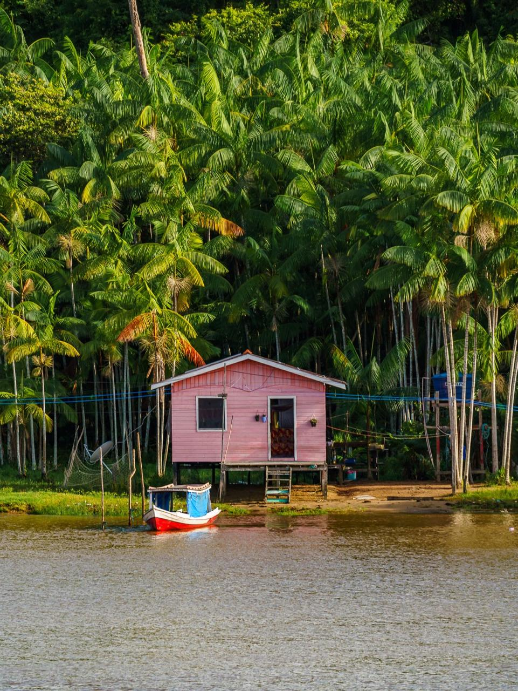

Gênero & Sociobioeconomia
Uma iniciativa que fortalece o protagonismo feminino nas comunidades ribeirinhas e extrativistas da Amazônia, unindo identidade, território e sustentabilidade.

Sobre o projeto
O Guardiãs da Floresta nasce do reconhecimento de que as mulheres são agentes centrais na conservação dos ecossistemas amazônicos. Por meio da sociobioeconomia, buscamos gerar autonomia econômica sem romper o vínculo sagrado com a floresta.
Trabalhamos com comunidades ribeirinhas, extrativistas e indígenas, colocando o gênero no centro das estratégias de desenvolvimento sustentável.
Pilares
Defender o direito das comunidades ao seu território é defender a floresta. Sem terra, não há identidade. Sem identidade, não há guardiãs.
As mulheres da floresta sempre souberam guardar. Nosso papel é amplificar suas vozes, fortalecer suas lideranças e garantir que decidam sobre seu próprio futuro.
Renda digna a partir do que a floresta oferece com generosidade — castanha, açaí, óleos, artesanato — cadeias produtivas que mantêm o bioma vivo.
"A floresta não precisa ser destruída para gerar riqueza.
Ela precisa de quem a conheça, de quem a ame."
O que fazemos
Oficinas presenciais e remotas em gestão, direitos, saúde e produção sustentável para mulheres ribeirinhas e extrativistas.
Estruturação de cooperativas e associações lideradas por mulheres, com acesso a mercados justos e certificações socioambientais.
Documentação dos saberes tradicionais e territórios, criando base para incidência política e defesa de direitos.
Levar as vozes das guardiãs para fóruns nacionais e internacionais de clima, biodiversidade e direitos das mulheres.
Parceiros & apoiadores
Faça parte
Seja você uma comunidade, organização, pesquisadora ou pessoa que acredita que floresta em pé é futuro — há um lugar nessa rede para você.